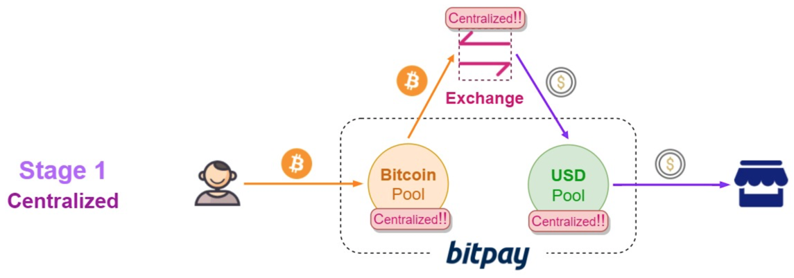
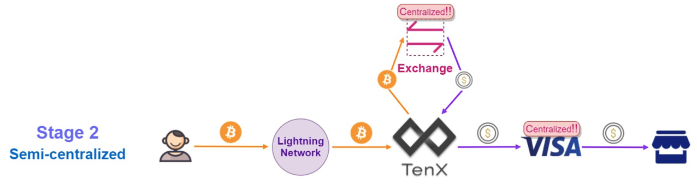
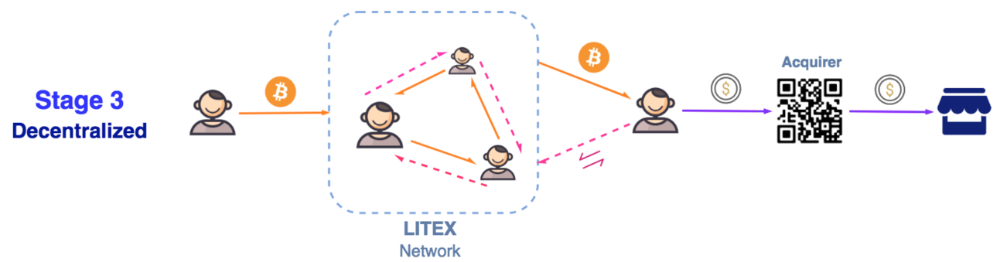
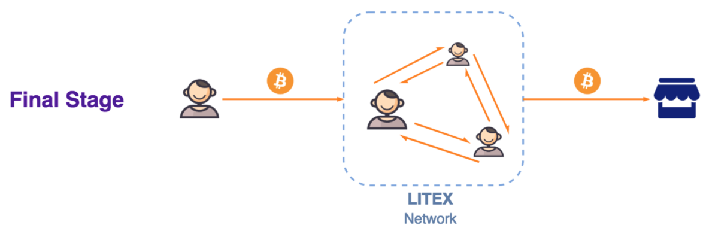

4 解决方案演变
为了提高消费者和商户对交易中使用加密货币的接受程度，一个合格的产品要能解决这些基本问题：
支付到账慢
支付手续费高
商户接受度低
应对前两个问题最好的方式是尽量避免在主链进行交易，但这也会带来一些安全问题；最后一个问题则相对简单，只要为商户承担加密货币到法币的兑换工作，实现向商户直接结算法币即可。然而在实现方式上能否延续加密货币的去中心化的理念在很大程度上决定了这种方案的生命力，因为只有去中心化的解决方案才能体现加密货币的核心价值，否则无法稳定长期运营。按照这个标准，我们把现有的解决方案划分为三个阶段，分别为：中心化、半中心化、去中心化，最后在加密货币实现完全流通后，讨论哪种方案更有生命力。
4.1 阶段一：中心化解决方案——代表产品BitPay

BitPay是目前全球最大的加密货币（主要是比特币）支付解决方案提供商，被称为比特币界的PayPal。它通过向商户提供法币结算的方式，鼓励更多商户接入比特币支付方式。自2014年成立以来，BitPay已经在全球拥有了几万个合作商户。
BitPay通过把用户转账过来的比特币帮商户兑换成法币的方式提供服务，然而这种服务模式已经逐渐脱离时代：日趋高昂的手续费让原本就不太多的比特币支付者变得更加稀少，也迫使BitPay将商户的提现门槛提高到了100美元。另一方面，BitPay完全中心化的运作模式使得用户和商户的资金安全得不到保障：为了节省手续费，用户会倾向于每次向BitPay的钱包中转入较大金额的比特币，而商户端也有前述的提现门槛。如果BitPay因为遭遇攻击导致其官方账户中的比特币和现金受损，那么相应的用户和商户资金也就丢失了。
4.2 阶段二：半中心化的解决方案——代表产品TenX
比特币社区对隔离见证达成共识后，闪电网络的前景也明朗起来，很多团队开始基于闪电网络构建解决方案。他们中的佼佼者——TenX在36小时内筹集到100,000枚ETH的成绩也侧面反映出了业界对这种解决方案寄予厚望。

TenX的进步之处在于它通过闪电网络与用户进行加密货币转账，规避了加密货币存储在官方账户内的中心化风险，因为即使TenX受到攻击，用户依然可以利用RSMC智能合约将自己的资金提回主链钱包内，不用担心被攻击者转走。但是这在支付流程中只能算是完成了一半，因为还需要将加密货币兑换成法币向商户结算，TenX在这一步选择了与Visa合作发行联名信用卡的方式解决问题。然而Visa官方曾明确表示，Visa并不涉及到将货币转换为法定货币的方式，这方面由发行人或其程序管理员通过一个加密的货币兑换来执行。也就是说Visa只是作为一个结算通道帮助TenX集成进商户的结算流程，其对加密货币消费的所谓支持也与用户使用信用卡积分进行消费非常类似，并不涉及加密货币兑换法币的业务，可见这一步骤只能由TenX借助交易所等方式中心化地完成。
另一方面，通过Visa等银行卡组织与商户结算相当于将自己核心商业模式的一半委托给合作方完成，而作为加密货币支付方式的TenX与代表传统货币支付网络的Visa在将来必然会发展为竞争关系，这是非常不稳定的。2018年的1月6日，Visa宣布与一家名为WaveCrest的借记卡供应商结束了合作，而正是这家公司发行了TenX、CryptoPay、Bitwala、Wirex等公司的加密货币联名卡，这导致了TenX与Visa联合发行的银行卡已经无法使用。
4.3 阶段三：去中心化的解决方案——LITEX

无论BitPay还是TenX，都存在对Visa等卡组织的依赖和中心化的加密货币到法币的兑换方案，这些给他们的商业模式带来了隐患和打击。只有探索出一种完全去中心化的支付路径，才有可能长久地解决加密货币的支付问题，LITEX正是这样一种解决方案。
LITEX的架构中不存在任何中心化的结点，无论是加密货币的传递还是法币的结算都是由网络上的用户结点自主协调完成的，这是LITEX网络结点通过复杂的匹配模型和路由算法实现的。在这一过程中，消费者成功用加密货币完成了即时支付，即使支付金额非常小也不会受影响；商户实时地收到了对应金额的法币，免受提现门槛的困扰；购币者也低成本地换到了需要的加密货币，可以用于接下来的消费或任何目的。
LITEX不但低成本、高效率地解决了加密货币在支付场景中遇到的问题，还能最大限度地保障用户和商户的资金安全。在上述交易过程中，如果交易环节中有结点出现问题，交易都可以自动切换到其他路径继续进行；即使大部分结点瘫痪导致交易无法进行，用户的资金也会按照RSMC的约定自动提现到主链账户或退回法币账户，不会被窃取或丢失。
4.4 最终阶段：用加密货币完成交易闭环
用户使用加密货币支付，商户使用加密货币结算，法币与加密货币互换的需求大幅减少甚至消失，这是我们期望看到的加密货币本位的新业态。

LITEX在这一过程中会发挥非常大的促进作用，但这并不意味着LITEX的价值仅存在于过渡阶段，即使在完全加密货币化的交易场景中，LITEX已经建立起的大规模、多联通的闪电网络结构仍然是效率最高、成本最低的支付通路，这一先发优势建立的壁垒将具有非常大的粘性，让LITEX成为用户支付的首选。